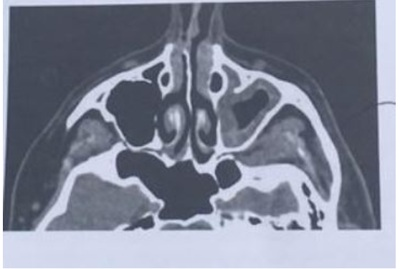
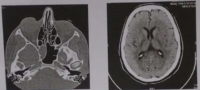

Questão 1 · Diagnóstico · 4000124807Todos as alternativas a seguir apresentam elementos para diagnóstico da rinossinusite alérgica, exceto:
A prurido e obstrução nasal.
B reações mediadas por IgE.
C necessidade de confirmação radiológica.
D espirros em salva.
E rinorreia não purulenta.
Questão 2 · Tratamento · 4000108233Menina de 10 anos é trazida pela mãe ao pronto atendimento com história de 3 dias de febre, tosse, rinorreia amarelada, dor de garganta e mal-estar. A mãe está preocupada porque, há 2 meses, sua lha foi tratada para sinusite com amoxicilina por 14 dias. Ao exame, a menina está em bom estado geral, febril (38 °C), com hiperemia de orofaringe sem exsudato e presença de rinorreia amarelada. Restante do exame está normal. A conduta deve ser:
A solicitar radiografia de seios da face.
B prescrever novamente amoxicilina por 14 dias.
C orientar amoxicilina-clavulanato por 14 dias.
D prescrever azitromicina por 5 dias.
E orientar sintomáticos e retorno se necessário.
Questão 3 · Tratamento · 4000106428Um menino de 15 meses é levado ao pronto atendimento com quadro de febre há 2 dias (máximo de 38 °C), coriza, tosse, inapetência e irritabilidade. Ao exame físico, está em regular estado geral, afebril, com FR: 32 ipm, FC: 144 bpm, ausculta pulmonar com alguns estertores grossos difusos, oroscopia sem alterações e otoscopia com hiperemia e opacidade bilateral. Dentre as abaixo, a melhor conduta é:
A Prescrever amoxicilina via oral, na dose de 100 mg/kg/dia por 5 dias.
B Prescrever amoxicilina com clavulanato de potássio, na dose de 90 mg/kg/dia por 7 a10 dias.
C Prescrever claritomicina oral na dose de 15-20 mg/kg/dia, por 7 a 10 dias.
D Prescrever amoxicilina via oral, na dose de 50 mg/kg/dia por 7 a 14 dias.
E Orientar analgésicos, antitérmicos, hidratação e repouso, com retorno em 48 horas.
Questão 4 · Manejo · 4000096236Adolescente de 12 anos, sexo masculino, procura atendimento por apresentar vários episódios de epistaxe nos últimos três meses. Mãe nega história de hematomas ou sangramentos. Exame físico: normal. Durante o exame apresenta epistaxe moderada, sugerindo sangramento anterior no plexo de Kiesselbach. A conduta inicial deve ser:
A aplicar pressão direta
B cauterizar a área afetada
C administrar fatores de coagulação
D realizar tamponamento nasal anterior e posterior
E usar adrenalina nasal
Questão 5 · Tratamento · 4000078052Escolar, 7 anos, feminino, há 15 dias iniciou quadro respiratório com obstrução nasal, coriza e tosse diurna. O exame físico não mostras alterações além da obstrução nasal. A terapia inicial a ser realizada de acordo com a principal hipótese diagnóstica é
A azitromicina.
B cefixima.
C amoxicilina.
D sulfametoxazol-trimetoprim.
E amoxicilina-clavulanato.
Questão 6 · Tratamento · 4000073189Qual é o tratamento de escolha inicial da sinusite em menores de 2 anos frequentadores de creche?
A Amoxicilina em dose duas vezes a habitual + clavulanato de potássio.
B Amoxicilina na dose habitual.
C Cefalexina.
D Sulfametoxazol + trimetoprim.
E Claritromicina.
Questão 7 · Diagnóstico · 4000063001O diagnóstico de rinite alérgica é feito por meio de:
A Realização de prick test (puntura)
B História pessoal e familiar em conjunto com sinais e sintomas clínicos
C Determinação de níveis séricos de IgE alérgeno específica
D Exame de citologia nasal
Questão 8 · Manejo · 4000053750Qual dos procedimentos abaixo é a prioridade em um paciente que apresenta epistaxe severa?
A Realização de exame de imagem.
B Diagnóstico etiológico.
C Tamponamento nasal anterior.
D Acesso venoso e reposição volêmica.
E Administração de anti-hemorrágicos.
Questão 9 · Corpo Estranho Nasal · 4000053699Em relação aos corpos estranhos nasais:
A Os rinólitos são frequentemente diagnosticados por achado radiológico.
B Deformidade nasal não ocorre como complicação.
C O procedimento de remoção é simples não havendo chance de aspiração.
D O diagnóstico é simples pois a anamnese traz as informações do tipo de corpo estranho e de quando foi colocado na maioria dos casos.
E Corpo estranho em seio maxilar não é considerado corpo estranho nasal.
Questão 10 · Diagnóstico Dif erencial · Fibrose Cística · Diagnóstico · 4000053259Pré-escolar de 3 anos, apresenta quadros recorrentes de sibilância e tosse desde 1 mês de vida. Apresenta tosse diariamente, produtiva, não apresentando períodos de remissão dos sintomas. Já cou internado algumas vezes por pneumonia. Apresenta peso e estatura abaixo do Z score -2 e segundo a mãe sempre teve di culdade em ganhar peso, apesar de alimentar-se bem. Já vem realizando tratamento com corticóide inalatório em dose alta sem melhora. Ao exame físico apresenta aumento do diâmetro ântero-posterior do tórax, presença discreta de tiragens, ausculta com estertores grossos, nos e sibilos bilateralmente. Diante do quadro apresentado, assinale a hipótese diagnóstica mais provável e o exame a ser realizado para confirmação diagnóstica, respectivamente.
A asma - espirometria com prova broncodilatadora
B aspiração de corpo estranho - tomografia de tórax
C fibrose cística - teste do suor
D discinesia ciliar primária - teste da sacarina
E sinusite crônica - tomografia de seios da face
Questão 11 · Tratamento · 4000042428Assinale a alternativa correta quanto à sinusite bacteriana aguda.
A Em caso de criança com doença persistente, é possível optar por prescrição de antibioticoterapia ou oferecer observação durante 03 dias.
B A amoxicilina é o fármaco de escolha para tratamento da sinusite bacteriana aguda não complicada e com suspeita de resistência antimicrobiana.
C A amoxicilina com clavulanato de potássio é indicada para pacientes com doença leve a moderada, com idade inferior a 02 anos ou que tenham sido tratados recentemente com antibióticos.
D A ceftriaxona, indicada para crianças com vômitos, incapazes de tolerar medicação oral ou com pouca probabilidade de aderir às doses iniciais de antibiótico, é administrada em dose única diária de 30 mg/kg.
Questão 12 · Tratamento · 4000034291Homem de 21 anos queixa-se de coriza, espirros, obstrução nasal, tosse seca, gotejamento nasal posterior, disfonia e dor facial há dois dias. Nega comorbidades. Ao exame físico, apresenta PA 120/60mmHg, FC 60bpm, FR 13irpm, SpO₂ em ar ambiente 99%, Tax 37,8°C. Os exames respiratório e cardiovascular são normais. Há hiperemia das mucosas ocular, nasal e faríngea, úlceras rasas na mucosa do palato mole e pontos de exsudato purulento nas tonsilas palatinas. A conduta inicial MAIS ADEQUADA nesse caso é prescrever:
A amoxicilina e anti-inflamatório não esteroidal, ambos para uso oral.
B levofloxacino e glicocorticoide, ambos para uso oral.
C n-acetilcisteína e anti-histamínico, ambos para uso oral.
D soro fisiológico e glicocorticoide, ambos para uso tópico nasal.
Questão 13 · Diagnóstico · 4000032676Pré-escolar com quatro anos apresenta há cinco dias tosse, secreção e obstrução nasal, evoluindo com leve melhora dos sintomas. Hoje iniciou febre e queda do estado geral sendo levado ao consultório pediátrico. Exame físico: eupneico, hiperemia de faringe com drenagem de secreção posterior e a visualização do vestíbulo nasal mostra crostas amareladas. O diagnóstico de rinossinusite é confirmado por:
A Ressonância magnética
B Raio-X dos seios da face
C Anamnese e exame físico
D Tomografia computadorizada
Questão 14 · Apresentação Clínica · 4000027393A sinusite aguda ocorre como complicação das infecções virais do trato respiratório superior, com alta incidência na população infantil. Devemos suspeitar de infecção bacteriana principalmente quando:
A houver a presença de rinorreia purulenta
B acompanhar-se de febre acima de 39°C
C o raio x de seios da face mostrar espessamento de mucosa maior que 4mm
D houver halitose acompanhando os sintomas de dor facial
E não houver melhora dos sintomas de uma infecção de via aérea superior após 10 dias
Questão 15 · Diagnóstico · 4000026639Pré-escolar com quatro anos apresenta há cinco dias tosse, secreção e obstrução nasal, evoluindo com leve melhora dos sintomas. Hoje iniciou febre e queda do estado geral sendo levado ao consultório pediátrico. Exame físico: eupneico, hiperemia de faringe com drenagem de secreção posterior e a visualização do vestíbulo nasal mostra crostas amareladas. O diagnóstico de rinossinusite é confirmado por:
A Ressonância magnética.
B Raio-X dos seios da face.
C Anamnese e exame físico.
D Tomografia computadorizada.
E Cintilografia com radioisótopos.
Questão 16 · Diagnóstico · 4000020268Paciente cinco anos apresenta tosse, secreção e obstrução nasal com início há dez dias. Hoje iniciou febre e queda do estado geral. Ao exame físico nota-se obstrução nasal com secreção amarelada e hiperemia de faringe com drenagem de secreção posterior. O diagnóstico de rinossinusite é realizado por:
A raio-X dos seios da face.
B ressonância magnética.
C anamnese e exame físico.
D tomografia computadorizada.
E hemograma.
Questão 17 · Rinossinusites · 4000006278O novo corona vírus, que já infectou mais de 2 mil pessoas em surto na China e atingiu outros 12 países, segundo autoridades chinesas, 81 mortes por causa do vírus foram confirmadas no país. O ministro da Saúde chinês, Ma Xiaowei, disse que a capacidade do vírus de se espalhar parece estar aumentando. Sobre o Corona vírus a alternativa correta é:
A Os corona vírus humanos causam infecções respiratórias brandas, de curta duração. Os sintomas mais comuns são tosse, dor de garganta, coriza e febre.
B O corona vírus pode ser transmitido de animais para humanos e de pessoa a pessoa pelo ar ou por contatos pessoais com secreções contaminadas.
C Para reduzir a chance de contaminação pelas formas mais graves sugere-se vacinação contra Influenza.
D O tratamento específico deve ser instituído o mais precocemente para evitar a replicação viral e possíveis agravamento do quadro.
Questão 18 · Diagnóstico · 4000116331Menina, 3 anos de idade, no pronto atendimento, há 3 dias com rinorreia aquosa, episódios de obstrução nasal e referindo febre aferida, acompanhando o quadro. Exame físico: bom estado geral, eupneico, febril, hiperemia discreta de tonsilas, sem secreção purulenta. Membranas timpânicas hiperemiadas bilateralmente, sem abaulamento. Restante do exame físico sem alterações. O diagnóstico é:
A Otite média aguda
B Rinossinusite aguda
C Resfriado comum
D Amigdalite aguda
E Pneumonia bacteriana
Questão 19 · Corpo Estranho Nasal · 4000113922Paula tem três anos e há 15 dias vem apresentando secreção purulenta com raios de sangue e odor fétido na narina D. O diagnóstico provável é:
A Hipertrofia das adenóides
B Difteria nasal
C Sinusite aguda
D Desvio de septo
E Corpo estranho
Questão 20 · Apresentação Clínica · 4000111936A rinite alérgica acomete cerca de 20% da população pediátrica e pode ser muito incapacitante. Escolha a alternativa com os sintomas mais característicos:
A prurido nasal, espirros e coriza hialina.
B prurido nasal, obstrução nasal e coriza amarelada.
C obstrução nasal, prurido e tosse seca.
D prurido ocular, tosse seca e prurido nasal.
Questão 21 · Apresentação Clínica · 4000111771Paciente feminina,18 anos, chega ao PA dizendo estar resfriada há 2 (duas) semanas. Sua principal queixa é de obstrução nasal, rinorréia amarelo-esverdeada e pigarro incomodo que a faz tossir secreção amarelo-esverdeada. Nega febre ou cefaleia.
A Trata-se de um resfriado prolongado,devendo ser prescrita medicação sintomática.
B O quadro provável é de sinusopatia aguda, devendo ser prescrito um antibiótico.
C A paciente não pode ser dispensada sem que se realize um RX de seios da face e um RX de tórax.
D O quadro é de sinusopatia aguda, devendo ser prescrito um descongestionante nasal e inalação com vapor d' água.
Questão 22 · Diagnóstico · 4000106060Considerando a tomografia abaixo, qual é a principal hipótese diagnóstica?

A Sinusopatia maxilar esquerda.
B Sinusopatia maxiloesfenoidal direita.
C Sinusopatia maxiloetmoidal esquerda.
D Sinusopatia frontal direita.
Questão 23 · Epidemiologia · 4000100514Mãe refere que seu lho apresenta obstrução nasal, prurido nasal e espirros recorrentes há 3 meses. Traz os seguintes exames: hemograma normal, IgE sérico total normal, teste cutâneo negativo para os principais inalantes, citológico nasal com células epiteliais e protoparasitológico negativo. O principal diagnóstico será de rinite:
A Infecciosa viral
B Alérgica
C Idiopática
D Eosinofílica não alérgica
Questão 24 · Tratamento · 4000080882Na UPA em Mossoró, você atende Marta, de 4 anos de idade, que segundo a mãe iniciou quadro de coriza, febre (37,9° C) e congestão nasal há 3 dias. Ao exame físico bom estado geral, não apresentava adenopatias, lesões cutâneas, visceromegalias ou febre. Aparelho respiratório e cardiovascular sem alterações. Diante desta situação qual será sua melhor conduta:
A Solicitar hemograma, PCR, radiografia de tórax e de seios da face.
B Alta com prescrição de medicações sintomáticas.
C Etapa de hidratação venosa e solicitar radiografia de tórax e de seios da face.
D Alta com prescrição de medicações sintomáticas e antibioticoterapia.
Questão 25 · Tratamento · 4000078337Adolescente, 13 anos, feminina, apresenta espirros em salva, prurido nasal e rinorreia não purulenta. A rinoscopia anterior mostra mucosa nasal pálida, hipertro a dos cornetos e a presença de rinorreia hialina. Mãe apresenta o mesmo quadro. Os sintomas ocorrem em menos de quatro dias nas semanas, não alterando sono ou in uenciando nas atividades, não parecendo trazer incômodo. Além da irrigação salina, a terapêutica medicamentosa inicial a ser utilizada para o controle dos sintomas é:
A prednisolona oral.
B budesonida intranasal.
C imunoterapia alérgeno-específica.
D cetirizina oral.
E brometo de ipatrópio intranasal.
Questão 26 · Introdução · Resf riado ComumRinossinusite Viral · 4000068757Lactente com oito meses de vida é trazido ao pronto atendimento com história de febre baixa, tosse seca e coriza de início há seis dias. Ao exame clínico: bom estado geral, mamando bem em seio materno com frequência respiratória de 48 irpm, sem esforço respiratório. Ausculta pulmonar: murmúrio vesicular presente e simétrico bilateralmente, roncos de transmissão. Baseado no Manual de Doenças Respiratórias Agudas do Ministério da Saúde, qual é o diagnóstico correto?
A Resfriado comum.
B Pneumonia.
C Pneumonia Grave.
D Pneumonia Muito Grave.
Questão 27 · Tratamento · 4000068384Paciente de quatro anos apresenta história de febre baixa, tosse produtiva e secreção nasal amarelada há dez dias. Qual antibiótico você escolheria para o tratamento ambulatorial do quadro acima?
A Ácido nalidíxico.
B Levofloxacino.
C Amoxicilina+Clavulanato.
D Penicilina Benzatina.
Questão 28 · Tratamento · 4000059897Com relação às rinossinusites agudas em crianças, identifique como verdadeiras (V) ou falsas (F) as seguintes afirmativas: ( ) A infecção viral de vias aéreas superiores é o principal fator de risco para o desenvolvimento de rinossinusite aguda bacteriana. ( ) Obstrução dos óstios sinusais, disfunção do aparelho ciliar e espessamento de secreções nasais são importantes fatores na sua patogênese. ( ) Permanência de sintomas após 5 dias, aumento ou reaparecimento de secreção nasal e tosse ou febre após melhora inicial devem levar à suspeita de rinossinusite aguda bacteriana. ( ) Secreção nasal mucopurulenta por 4 dias acompanhada de febre acima de 39° C ou permanência de sintomas por mais de 10 dias são indicativos da necessidade de prescrição de antibiótico. ( ) O uso de corticoide intranasal diminui o número de dias de tratamento com antibiótico. Assinale a alternativa que apresenta a sequência correta, de cima para baixo.
A V – V – F – V – F.
B F – F – V – F – V.
C V – F – F – V – F.
D F – V – V – V – F.
E V – F – V – F – V.
Questão 29 · Complicações · 4000054484Paciente masculino de 28 anos procura o pronto-atendimento por quadro de rinorreia purulenta, congestão nasal e cefaleia frontal. Iniciou febre há dois dias, com dor à palpação do local. Hoje pela manhã iniciou quadro de diplopia. Não apresenta outras comorbidades ou uso de medicações. Os sinais vitais estão dentro da normalidade, exceto temperatura de 38,4 °C. Ao exame físico, nota-se dor à palpação de seio maxilar à esquerda e paralisia de III par craniano à esquerda. Qual conduta deve ser realizada?
A Iniciar amoxicilina e reavaliar em 3 dias.
B Aguardar laudo de tomografia computadorizada de seios da face.
C Iniciar moxifloxacino e reavaliar em 3 dias.
D Iniciar amoxicilina + clavulanato e reavaliar em 3 dias.
E Realizar intervenção cirúrgica e antibioticoterapia endovenosa.
Questão 30 · Tratamento · 4000052833Menino de 5 anos apresenta história de coriza há 3 semanas evoluindo com tosse produtiva que piora ao deitar há 15 dias, secreção nasal amarelada em pequena quantidade e febrícula há 2 dias. Assinale o diagnóstico e conduta corretos nesse caso:
A Traqueobronquite, radiografia de tórax, amoxacilina e mucolítico;
B Rinofaringite aguda, lavagem nasal com solução fisiológica e antitérmico;
C Sinusite aguda, lavagem nasal com solução fisiológica e amoxacilina;
D Sinusite aguda, radiografia de seios da face, lavagem nasal com solução fisiológica e amoxacilina;
E Resfriado comum, lavagem nasal com solução fisiológica e antitérmicos.
Questão 31 · Diagnóstico · 4000045314Homem, 30 anos de idade, procura pronto atendimento com queixa de tosse seca, secreção nasal importante e dor na face em peso. Os sintomas se iniciaram há 17 dias, melhoraram por volta do quinto dia e logo depois evoluiram com piora progressivamente. Único achado alterado de exame físico: secreção posterior em orofaringe. As condutas diagnóstica e terapêutica corretas são, respectivamente:
A tomografia de seios da face; amoxicilina-clavulanato e sintomáticos.
B radiografia de seios da face; apenas sintomáticos.
C tomografia de seios da face; apenas sintomáticos.
D radiografia da face; amoxicilina-clavulanato e sintomáticos.
E exame clínico já realizado, sem necessidade de exame de imagem; amoxicilina- clavulanato e sintomáticos.
Questão 32 · Tratamento · 4000034852A maior parte das sinusites na infância é complicação de uma infecção respiratória aguda. O tratamento antimicrobiano está indicado em pacientes:
A com febre elevada.
B com velamento dos seios na tomografia.
C com mais de 10 dias de coriza mucopurulenta.
D com presença de nível no raio X de seios da face.
E com a tríade característica de tosse, coriza purulenta e cefaleia.
Questão 33 · Tratamento · 4000033885Sobre corticoesteroides tópicos de uso nasal e rinite alérgica: ( ) melhoram todos os sintomas da rinite alérgica, incluindo os sintomas oculares associados e seu início de ação é imediato. ( ) o corticoesteroide tópico de uso nasal ideal deveria apresentar alta lipo lia, baixa biodisponibilidade sistêmica e clearence sistêmico rápido. ( ) o aumento da dose de corticoesteroides tópicos de uso nasal sempre garantem aumento de e cácia, embora aumente o risco de efeitos indesejáveis. ( ) os principais efeitos colaterais locais são irritação local, sangramento e perfuração nasal e a técnica incorreta de administração da medicação não interfere no risco de ocorrência dos mesmos. A sequência correta é:
A V - V - F - V.
B F - V - F - V.
C V - V - F - F.
D F - V - F - F.
Questão 34 · Tratamento · 4000017241Universalmente os serviços de urgência apresentam um enorme número de casos de infecção respiratória. Em relação às infecções respiratórias agudas, é INCORRETO afirmar que:
A As crianças sadias apresentam em média 6 a 8 resfriados por ano durante os primeiros anos de vida.
B O uso de mucolíticos na rinofaringite aguda tem ação comprovada para fluidificar secreção.
C A otite média é a complicação mais comum após quadro de rinofaringite comum.
D O tratamento de escolha para faringoamigdalite bacteriana é a penicilina.
Questão 35 · Tratamento · 4000125391Em relação à sinusite aguda, é correto afirmar que:
A é preciso solicitar tomografia de crânio, sempre que possível, para confirmar diagnóstico.
B o comprometimento frontal é mais comum em pré-escolares.
C geralmente evolui favoravelmente sem tratamento antimicrobiano.
D hemófilo é a bactéria mais comumente envolvida.
E é doença comum em menores de dois anos.
Questão 36 · Apresentação Clínica · 4000116766Devido a falta de um paciente a enfermeira de sua unidade de saúde encaixa uma criança com queixa aguda, trata se de uma menina de 3 anos com tosse intensa há 5 dias, febre baixa por 3 dias no início do quadro. Ao exame ela está irritada, frequência respiratória normal, pulmões limpos e tosse intermitente, além de drenagem nasal purulenta. A mãe se mostra também irritada e agressiva, relata que está há 3 dias sem dormir por causa da tosse e irritabilidade da criança e que precisa de um xarope para tosse urgente e um atestado para o trabalho já que não consegue levar a criança na creche desse jeito. Assinale a alternativa CORRETA:
A Prescrever um antitussígeno para melhorarem os sintomas e oferecer para a mãe um atestado de acompanhante entendendo que essas são as expectativas dela com a consulta.
B Perguntar sobre como pode ajudá-la, problematizar sobre a evolução esperada de um resfriado e o custo- benefício do uso de antitussígenos e xaropes, oferecer uma reavaliação em 48h de um atestado de acompanhante.
C Entrar com amoxicilina 50mg/kg dia pois trata-se de uma provável sinusite bacteriana cujo diagnóstico é clínico. Explicar que a tosse deve melhorar conforme o antibiótico fizer efeito e que não há evidências científicas sobre o uso de anti-tussigenos e xaropes nesses casos.
D Encaminhar a paciente para o pronto socorro para coleta de exames e RX de tórax e seios da face já que a febre já está no terceiro dia e nesses casos a chance de infecção bacteriana secundária é muito grande. Dizer para a mãe que a preocupação dela é sim justificada mas que não há sinais de alarme nesse momento.
Questão 37 · Corpo Estranho Nasal · 4000111953Criança de 3 anos, hígida, com febre e obstrução nasal unilateral com saída de secreção purulenta e fétida daquela narina, o provável diagnostico:
A Sinusite frontal.
B Pólipos nasais.
C Corpo estranho.
D Atresia de coanas.
E Desvio de septo.
Questão 38 · Clínica Médica · Neurologia · Critérios Diagnósticos · 4000108253Homem, 53 anos, refere cefaleia diária, de forte intensidade, há 15 dias. Tem apresentado dois episódios diários de dor, praticamente nos mesmos horários. Um deles sempre ocorre no período noturno, acordando-o do sono. Refere que a dor é unilateral, acometendo o lado esquerdo da cabeça e dura por volta de 1 hora. Associado ao quadro, relata hiperemia do olho esquerdo, lacrimejamento intenso e sensação de congestão nasal. O exame físico é normal, no momento da consulta, sem dor. Assinale a alternativa que apresenta o diagnóstico mais provável.
A Glaucoma de ângulo fechado.
B Sinusite esfenoidal.
C Cefaleia em salvas.
D Nevralgia do trigêmeo.
E Enxaqueca sem aura.
Questão 39 · Diagnóstico · 4000104995Homem, 30 anos de idade, procura pronto atendimento com queixa de tosse seca, secreção nasal importante e dor na face em peso. Os sintomas se iniciaram há 17 dias, melhoraram por volta do quinto dia e logo depois evoluíram com piora progressivamente. Único achado alterado de exame físico: secreção posterior em orofaringe. As condutas diagnóstica e terapêutica corretas são, respectivamente,
A tomografia de seios da face; amoxicilina-clavulanato e sintomáticos.
B radiografia de seios da face; apenas sintomáticos.
C tomografia de seios da face; apenas sintomáticos.
D radiografia da face; amoxicilina-clavulanato e sintomáticos.
E exame clínico já realizado, sem necessidade de exame de imagem; amoxicilina-clavulanato e sintomáticos.
Questão 40 · Tratamento · 4000103844Menino de 3 anos de idade foi levado à consulta médica por queixa de tosse, coriza e obstrução nasal há 12 dias, sem melhora. Apresenta secreção nasal esverdeada intensa, principalmente ao acordar, que vai melhorando ao longo do dia. Queixa-se de cefaleia em região frontal durante todo o período de doença. Não há alterações do exame clínico. Traz radiogra a de seios da face realizada hoje, com nível hidroaéreo em seios maxilares. Considerando a principal hipótese diagnóstica para o caso, qual das alternativas abaixo justifica a introdução de antibioticoterapia?
A Cefaleia em região frontal.
B Secreção nasal esverdeada intensa.
C Sintomas respiratórios por 12 dias.
D Nível hidroaéreo na radiografia.
Questão 41 · Tratamento · 4000103276Homem de 30 anos com rinite alérgica procura atendimento devido à tosse, há 20 dias, que piora ao deitar. A radiografia do tórax é normal e a dos seios da face revela nível hidroaéreo no seio maxilar direito. O antibiótico a ser prescrito como primeira escolha é:
A ciprofloxacina
B amoxacilina
C cefuroxima
D doxiciclina
Questão 42 · Etiologia e Epidemiologia · 4000102225De modo geral, o agente infeccioso mais comumente envolvido em infecções de vias aéreas superiores na infância é:
A Vírus.
B Pneumococo.
C Estreptococo beta hemolítico.
D Haemophyllus.
Questão 43 · Etiologia e Epidemiologia · 4000101597A sinusite nosocomial é uma complicação recentemente diagnosticada no paciente criticamente doente. Sobre isso, assinale a alternativa INCORRETA:
A Se não tratada, a sinusite pode ser complicada com a formação de abscesso cerebral, celulite pós-orbital e pneumonia nosocomial.
B Os pacientes de alto risco de sinusite são aqueles que recebem suporte ventilatório via tubo nasotraqueal e aqueles com colonização nasal com bactérias gram-positivas.
C Pacientes com trauma facial, cateter de alimentação ou nasogástrica e os que receberam antibióticoterapia apresentam risco aumentado.
D O diagnóstico, em geral, é feito quando se realiza TC à procura de uma fonte de febre e os seios são incluídos no corte.
Questão 44 · Apresentação Clínica · 4000098046Menina de 6 anos com quadro de coriza hialina, obstrução e prurido nasal e espirros em salva exacerbados ao contato com pelos de gato e poeiras domiciliares que evolui em crises desde os 3 anos de idade. Foi realizado o exame físico geral e especial. Considerando a provável hipótese diagnóstica, assinale a alternativa de achado no exame físico, não compatível:
A Sombras escuras embaixo dos olhos
B Conchas nasais hiperemiadas e hipertrofiadas
C Uma prega transversa no nariz
D Má oclusão dentária
Questão 45 · Apresentação Clínica · 4000085041Pré-escolar, após um resfriado, vem apresentando alterações clínicas há 12 dias. Dentre os achados clínicos abaixo, aqueles que sugerem diagnóstico de sinusite são: I- Tosse logo ao deitar e imediatamente ao acordar; II- Tosse no meio da madrugada e quando corre; III- Tosse durante o dia todo e também durante a noite; IV- Rinorréia mucosa e mau hálito; V- Cefaleia frequente.
A I e IV
B II e IV
C III e IV
D II e V
Questão 46 · Apresentação Clínica · 4000070478O atendimento de quadros de resfriamento comum faz parte da prática diária dos clínicos e pediatras em todo o mundo. Medidas terapêuticas de suporte, como orientação sobre o aumento da ingesta hídrica e lavagem nasal com solução salina estão sempre indicadas. Sintomas como febre, obstrução nasal, rinorreia, odinofagia e tosse podem compor o quadro clínico, com intensidade variada na dependência de faixa etária do paciente. Normalmente autolimitado, o resfriado pode apresentar complicações clínicas que precisam de tratamento específico. Uma das patologias que NÃO representa uma complicação comum do resfriado é a:
A Exacerbação da asma.
B Pneumonia bacteriana.
C Otite média aguda.
D Sinusite.
Questão 47 · Tratamento · 4000068388Menino de 4 anos, com quadro de obstrução nasal, coriza e tosse há 20 dias. Está febril há 72h horas com prostração, piora da tosse e saída de secreção nasal amarelada. Ao exame físico apresenta gotejamento posterior de cor amarelada. O médico da UPA fez o diagnóstico de sinusite bacteriana aguda. Sobre o caso, assinale a alternativa correta.
A Possivelmente, o diagnóstico está errado, pois não há relato de cefaléia, devendo tratar-se apenas de um quadro de resfriado ou gripe.
B O diagnóstico de sinusite bacteriana aguda é realizado pela anamnese, exame físico e radiografia de seios da face.
C O tratamento a ser realizado inicialmente deve ser com lavagem nasal com solução salina 09% e levofloxacino.
D O tratamento a ser realizado inicialmente deve ser realizado com lavagem nasal com solução salina 09% e azitromicina.
E O tratamento a ser realizado inicialmente deve ser realizado com lavagem nasal com solução salina 09% e amoxicilina.
Questão 48 · Anatomia Embriologia e Radiologia dos Seios Panarasais · 4000062013Dentre as opções abaixo, qual do (s) seio (s) da face já está (ão) presente (s) por ocasião do nascimento:
A etmoidal e esfenoidal
B frontal e esfenoidal
C etmoidal
D frontal
E etmoidal e maxilar
Questão 49 · Manejo · 4000055529Mulher de 54 anos, hipertensa apresenta sangramento nasal ativo há 200 minutos. Apresenta sinais vitais estáveis sem outras comorbidades. Diz que isso lhe acontece com frequência e geralmente consegue estancar o sangramento com as medidas inicias que seu médico lhe recomendou (pressionar o nariz entre o polegar e o indicador, limpeza nasal, assoar o nariz para remover coágulos de sangue remanescentes e até usou oximetazolina a 0,05% na forma de spray nasal), mas desta vez, nada parece resolver. Neste caso, sua conduta é:
A Rapidamente encaminhar para emergência para avaliação cirúrgica.
B Fornecer um anti-hipertensivo emergencial se a PA diastólica estiver acima de 80mmHg.
C Instituir medida imediata de reposição volêmica com Soro Fisiológico 0,9%.
D Acalmar a paciente e colocá-la em decúbito realizando uma hiperextensão do pescoço.
E Realizar tamponamento nasal anterior com gaze impregnada com vaselina.
Questão 50 · Rinossinusite Bacteriana Aguda na Inf ância · 4000050859A sinusite na infância pode ser classificada como aguda pós-viral quando os sintomas duram mais de 10 dias. Sobre esta patologia, está CORRETO afirmar que:
A Para confirmação diagnóstica, é necessário um exame de imagem.
B O uso de descongestionantes e anti-histamínicos auxiliam no tratamento.
C Recomenda-se a duração do tratamento antibiótico por mais sete dias após a resolução dos sintomas.
D A terapia inicial para sinusite bacteriana aguda não complicada deve ser realizada com amoxicilina-clavulanato.
E No período neonatal, não existe ocorrência de sinusite por não haver ainda desenvolvimento dos seios paranasais.
Questão 51 · Diagnóstico · 4000041879Criança, 4 anos, freqüenta creche em período integral desde 6 meses de vida. Apresentou quadro de resfriado há 2 semanas e desde então vem apresentando secreção nasal uida, às vezes mucopurulenta e tosse principalmente à noite. Há 4 dias vem apresentando episódios de febre, secreção nasal mucopurulenta freqüente e tosse principalmente pela manhã e à noite. Ao exame físico o médico observou: BEG, eupneico, hidratado, corado. Otoscopia: discreta hiperemia de membrana timpânica bilateral, sem abaulamento e brilho preservado. Oroscopia: hiperemia de amígdalas sem exsudato. Semiologia pulmonar normal. Considerando os dados clínicos e semiológicos, a hipótese diagnóstica é:
A Amigdalite bacteriana
B Otite média aguda
C Pneumonia
D Gripe
E Sinusite
Questão 52 · Etiologia e Epidemiologia · 4000041070É um dos agentes mais comuns da rinossinusite bacteriana:
A Streptococcus pneumoniae
B Moraxella catarrhalis
C Staphylococcus aureus
D Streptococcus beta hemolítico do grupo A
E Chlamydophila pneumoniae
Questão 53 · Tratamento · 4000033675As infecções respiratórias agudas são frequentes na infância e apresentam comumente sintomas como rinorreia, tosse e obstrução nasal. Qual das medidas abaixo está indicada e tem mais eficácia no controle destes sintomas?
A Higiene nasal com solução salina isotônica.
B Uso de mucolíticos e expectorantes.
C Uso tópico de descongestionante nasal com anti-histamínico.
D Vaporização com inalação de água aquecida.
Questão 54 · Tratamento · 4000024408Criança de 3 anos é levada por seu pai a consulta, relatando que o lho iniciou, há 3 dias, febre 37.5-38.5C°, 3 picos diários, tosse seca, congestão nasal e rinorreia amarelada, além de diminuição de apetite. Medicou com antitérmico. Relata que o lho tem esses episódios 3 a 4 vezes por ano. Não frequenta creche. Nega internações ou outras patologias anteriores. Ao exame físico: frequência respiratória 32. Aparelho respiratório sem ruídos adventícios. Hiperemia de orofaringe, sem lesões. Qual a melhor conduta?
A Prescrever soro nasal e antitérmico; orientar sobre benignidade do quadro.
B Prescrever antibioticoterapia e sintomáticos; solicitar exames laboratoriais.
C Prescrever corticoide nasal e anti-histamínico oral.
D Solicitar raio-X de tórax e iniciar oseltamivir oral.
Questão 55 · Corpo Estranho Nasal · 4000021540Lactente de 2 anos e 10 meses é levado ao pediatra com quadro de secreção nasal mucopurulenta de odor fétido e obstrução nasal unilateral. Qual o diagnóstico mais provável?
A Corpo estranho.
B Rinite alérgica.
C Pólipo nasal.
D Epistaxe.
E Sinusite.
Questão 56 · Etiologia e Epidemiologia · 4000018529As infecções respiratórias de repetição são muito comuns na infância. Assinale a opção correta:
A A presença de cinco infecções respiratórias por ano, em crianças com menos de 5 anos de idade, sempre significa a existência de alguma condição patológica associada.
B Os principais agentes etiológicos das infecções respiratórias de repetição são os vírus (principalmente o adenovírus e o pneumovírus) e as basctérias (Haemophilus influenzae, seguido pelo Streptococcus pneumoniae e Staphylococcus aureus).
C Em média, a criança saudável pode apresentar 4 a 8 infecções respiratórias por ano.
D O aleitamento reduz os índices de infecções respiratórias e gastrointestinais, sendo aconselhável o estímulo ao aleitamento exclusivo nos 6 primeiros meses de vida. O leite materno exerce efeito protetor devido a grande presença de IgG e baixa presença de lactoferrina.
Questão 57 · Etiologia e Epidemiologia · 4000014097Julgue o próximo item, relativo ao tratamento de complicações clínicas no sistema respiratório. Rinovírus, coronavírus e vírus sincicial respiratório constituem as principais etiologias de infecção de vias aéreas superiores, como a gripe.
A Certo.
B Errado.
Questão 58 · Apresentação Clínica · 4000005753Sofia, dois anos e oito meses, comparece à Unidade de Saúde acompanhada de sua mãe Andréia, que deseja uma avaliação da criança. Há três dias, So a vem apresentando quadro de obstrução nasal, coriza clara e, por vezes, amarelada, tosse e um episódio de febre de 38,2°C no primeiro dia de doença. Está ativa e com um pouco de diminuição do apetite, aceita bem líquidos. Sobre as infecções respiratórias agudas em crianças, é correto afirmar que
A as infecções respiratórias agudas do trato superior são o tipo de doença mais comum na infância, e estima-se que uma criança apresente de seis a oito episódios por ano. Na maioria das vezes, necessita de antibióticos para a sua resolução.
B esse tipo de situação não deve ser avaliada em uma Unidade Básica de Saúde, pois a paciente apresenta tosse e febre, sendo necessária uma avaliação radiológica para descartar pneumonia, que é a principal causa de morte de crianças nesta faixa etária. A criança deve ser encaminhada a um serviço de emergência.
C a criança deve ser avaliada na sua Unidade de Saúde pelo seu Médico de Família e Comunidade. Trata-se, aparentemente, de um quadro de infecção do trato respiratório superior, e, como não há sinais de complicação, deve ser tratado ambulatoriamente com antibiótico, devido ao episódio de febre, hidratação oral e sintomáticos.
D Sofia parece apresentar uma infecção aguda do trato respiratório superior de provável etiologia viral, geralmente, se tratando de um quadro autolimitado. Se esta suspeita se confirmar após a avaliação da sua Equipe de Saúde, está indicado o uso de anti-histamínico para alívio dos sintomas, e a mãe deve ser orientada sobre sinais de gravidade para reavaliação.
E a paciente acima apresenta história típica de uma infecção aguda no trato respiratório superior. Este tipo de quadro costuma ser de etiologia viral, necessitando de medicações para alívio de sintomas. A criança deve ser avaliada pela sua Equipe de Saúde da Família, e receber orientações quanto ao uso de medicações de alívio e sinais de gravidade para reavaliação.
Questão 59 · Tratamento · 4000003226Uma vez estabelecido o diagnóstico de rinossinusite aguda bacteriana na infância (RSAB), o antibiótico de escolha é:
A Claritromicina.
B Azitromicina.
C Amoxacilina.
D Sulfametoxazol/trimetoprim.
Questão 60 · Corpo Estranho Nasal · 4000000362São causas de obstrução de vias aéreas em pediatria, em crianças acima de 2 anos, todas apresentadas nas alternativas abaixo, EXCETO:
A Epiglotite.
B Corpos estranhos.
C Mononucleose.
D Ascaridíase.
Questão 61 · Apresentação Clínica · 4000125069Criança de 8 anos, há seis dias iniciou com picos febris de, em média, 38,5°C acompanhados de cefaleia, dor no corpo, indisposição, odinofagia, obstrução nasal, rinorreia serosa e tosse seca. Há quatro dias, a secreção nasal passou a amarelo- esverdeada pela manhã, mucosa ao longo do dia, serosa no nal da tarde e houve piora da obstrução nasal noturna. Há dois dias, teve um aumento da média da temperatura para 39,2°C, a secreção nasal cou amarelo-esverdeada ao longo do dia e surgiu uma moderada dor facial. Nesse caso, pode-se afirmar que:
A É imperativo fazer exame de raios X dos seios da face para completar o diagnóstico.
B Essa criança deve ser internada para tratamento hospitalar.
C O mais provável é que a criança esteja com uma complicação bacteriana secundária.
D Trata-se de uma gripe em seu curso normal e não de um resfriado comum.
E Deve-se colher secreção nasal para realizar cultura com teste de sensibilidade antibiótica.
Questão 62 · Tratamento · 4000125065Lactente de 9 meses apresenta quadro de febre moderada há três dias, acompanhada de rinorreia seromucosa, obstrução nasal noturna, tosse, lacrimejamento, congestão faríngea e gânglios occipitais. Qual deve ser a conduta?
A Anti-inflamatório não hormonal, antitérmico com critério, solução fisiológica nasal e orientação familiar.
B Amoxicilina para prevenir complicações bacterianas, antitérmico com critério, solução fisiológica nasal e orientação familiar.
C Antitérmico com critério, xarope para alívio da tosse, solução fisiológica nasal e orientação familiar.
D Descongestionante nasal sistêmico ou local, solução fisiológica nasal, antitérmico com critério e orientação familiar.
E Antitérmico com critério, solução fisiológica nasal e orientação familiar.
Questão 63 · Diagnóstico · 4000122272Um lactente de 9 meses é levado à UBS com história de coriza, tosse e recusa alimentar há 2 dias. A mãe refere que a criança está sempre resfriada e que precisou procurar o pronto-socorro 2 vezes nos últimos 3 meses. Ao exame físico, encontra-se em bom estado geral, afebril, chorosa, com coriza hialina e obstrução nasal. E, ainda: FC = 120 bpm e FR = 40 irpm; peso e estatura próximos ao percentil 50, observando-se desaceleração somente do ganho de peso; orofaringe com hiperemia generalizada, ausência de pontos purulentos, membranas timpânicas hiperemiadas bilateralmente, sem opaci cação e abaulamento; presença de roncos na inspiração e na expiração. O restante do exame físico é normal. Sobre o exposto, é CORRETO afirmar:
A Trata-se de um quadro gripal. O tratamento compreende hidratação e anti- inflamatório, e os vírus influenza e parainfluenza A, B e C são os agentes etiológicos mais frequentes.
B Trata-se de um quadro de bronquiolite. O tratamento é inalação com soro fisiológico, e o vírus sincicial respiratório é o agente etiológico mais frequente.
C Trata-se de um quadro de otite média aguda. O tratamento é amoxicilina e soro fisiológico nasal, e o Haemophilus influenzae é o agente mais frequente.
D Trata-se de um quadro de resfriado comum. O tratamento compreende hidratação e soro fisiológico nasal, e os rinovírus são os agentes etiológicos mais frequentes.
E Trata-se de um quadro de bronquite e faringite. O tratamento é penicilina benzatina, e o agente etiológico mais frequente é o streptococcus beta-hemolítico do grupo A.
Questão 64 · Rinossinusites · 4000108943Quanto a rinossinusite é correto afirmar:
A É comum a formação completa dos seios frontais a partir dos 2 anos de idade.
B O diagnóstico se dá através de RX de seios da face em duas incidências.
C A Tomografia computadorizada dos seios paranasais está indicada quando o RX de seios da face é inconclusivo.
D O agente etiológico mais comum é o Staphylococcus aureus.
E A amoxicilina tem boa eficácia contra os germes mais comumente envolvidos.
Questão 65 · Rinossinusites · Tratamento · 4000105879Mulher de 46 anos de idade queixa-se de cefaleia hemicrânica direita latejante, especialmente retro-orbitária há 3 dias, de forte intensidade, associada à fotofobia e náuseas associadas especialmente ao deitar. Piora da dor ao subir e descer escadas. Nega febre ou alteração de peso. Nega quadros semelhantes anteriores. No exame clínico, consciente e orientada, sem sinais neurológicos focais ou rigidez de nuca. Discreta hiperemia de orofaringe sem pontos purulentos. Restante do exame clínico está normal. Realizada tomografia computadorizada, exibida a seguir: O tratamento para a paciente é

A Sumatriptano e metoclopramida.
B Dipirona e ciclobenzaprina.
C Amoxicilina e budesonida.
D Oxigênio e verapamil.
Questão 66 · Anatomia e Etiologia · 4000090192A localização mais frequente de origem da epistaxe em indivíduos previamente hígidos é:
A Parede posterior, rinofaringe.
B Região posterior, artéria esfenopalatina.
C Região anterior, porção anterior do corneto inferior.
D Meato médio, porção posterior do corneto inferior.
E Região anterior, septo nasal em zona de Kisselbach.
Questão 67 · Corpo Estranho Nasal · 4000070301Um menino de 4 anos chega ao serviço de Emergência com secreção nasal há 2 meses. Sua mãe tem asma e seu pai eczema, não havendo outros dados dignos de nota na história familiar. Ao exame físico, você verifica que há secreção nasal na narina esquerda, com odor fétido e sangue. Há uma obstrução total desse lado, mas a outra narina está limpa. sem secreção nasal ou edema. O próximo passo no manejo desse paciente deve ser:
A Corticosteróide nasal e anti-histamínicos orais.
B Tomografia computadorizada dos seios da face
C Consulta com um otorrino para avaliar a possibilidade de corpo estranho.
D Antibiótico oral.
Questão 68 · Tratamento · 4000059378Carolina, 2 anos, comparece a consulta médica na unidade de saúde, levada por sua mãe, pois há 2 dias está com febre, tosse, secreção nasal, irritabilidade e dificuldade para se alimentar. Frequenta a creche. No exame físico apresenta hiperemia de orofaringe, roncos e transmissão na ausculta pulmonar, hiperemia de conduto auditivo bilateral no exame de otoscopia. A conduta mais adequada para o tratamento de Carolina:
A Amoxicilina, paracetamol, higiene nasal com soro fisiológico.
B Dexclorfeniramina, paracetamol, higiene nasal com soro fisiológico.
C Amoxicilina, dexclorfeniramina, paracetamol
D Higiene nasal com soro fisiológico, paracetamol, umidificação do ar.
Questão 69 · Tratamento · 4000057505Paciente do sexo masculino, 22 anos de idade, procura assistência médica devido a dor de garganta, coriza, espirros e congestão nasal de início há 24 horas. Ao exame físico,encontra-se em bom estado geral, com temperatura axilar de 36,6 °C. A conduta terapêutica para esse paciente deve ser feita por meio da prescrição de:
A oseltamivir.
B azitromicina.
C anti-inflamatório não hormonal.
D levofloxacino.
E penicilina G benzatina.
Questão 70 · Diagnóstico · 4000037347Em relação à rinossinusite bacteriana aguda assinale a alternativa INCORRETA:
A Febre (>38°C), gotejamento pós-nasal, dor/pressão facial são critérios diagnósticos.
B O exame de imagem de escolha é a ressonância magnética.
C Os agentes etiológicos mais freqüentes são: S. pneumoniae, H. influenzae, M. Catarrhalis, em alguns casos, pode- se encontrar anaeróbios e S. pyogenes.
D Não há comprovação científica de que o antibiótico previna complicações supurativas, como celulite orbital e abscesso cerebral.
Questão 71 · Tratamento · 4000037284Criança de 7 anos de idade apresenta temperatura de 37,8° - 38°C durante 3 dias, rinorreia e tosse seca. Hoje a mãe traz a criança ao pronto-socorro porque a tosse está produtiva. Ao exame físico apresenta temperatura axilar 39,5°C, hiperemia de orofaringe, secreção nasal espessa esverdeada. A mãe relata que o menino é alérgico à amoxicilina. Atualmente qual é a melhor indicação antimicrobiana para essa situação?
A Amoxicilina + ácido clavulânico 40 mg/K g/dia de amoxicilina 12/12 h - 10 dias.
B Sulfametoxazol (SMZ) + Trimetroprim (TMP) 12 mg TMP a cada 12 h - 10 dias.
C Cefuroxima 30 mg/Kg/dia 12/12h - 10 dias.
D Ceftriaxona 50 mg/Kg/dia 24/24 h - 3 dias.
Questão 72 · Rinossinusite Crônica · 4000034304Considerando o tratamento de rinossinusite crônica, qual das alternativas abaixo NÃO representa uma alternativa aceitável?
A Soluções salinas tópicas.
B Corticoide nasal.
C Antibióticos tópicos.
D Antibióticos sistêmicos em casos selecionados.
E Omalizumabe.
Questão 73 · Tratamento · 4000034288Sobre rinossinusite aguda, marque a alternativa INCORRETA:
A Coriza e congestação nasal são os sintomas mais importantes.
B Cerca de 2% dos casos são causados por bactérias.
C Soro fisiológico nasal, principalmente em grandes volumes melhoram os sintomas.
D 70% dos casos causados por bactérias melhoram espontaneamente mesmo sem antibióticos em 2 semanas.
E Descongestionantes aliviam os sintomas e estão indicados.
Questão 74 · Rinossinusite Bacteriana Aguda na Inf ância · 4000033152Na primeira infância, o(s) seio(s) paranasal(is) mais frequentemente envolvido(s) no processo infeccioso agudo é(são):
A Etmoidais.
B Maxilares.
C Frontal e esfenoidal.
D Frontal.
E Esfenoidais.
Questão 75 · Apresentação Clínica · 4000006999Deve-se considerar uma complicação de um quadro de IVAS, quando:
A houver início, persistência ou recorrência da febre, após 5 dias do início do quadro.
B apresentar náuseas e vômitos associados.
C apresentar diarréia com muco.
D apresentar coriza abundante.
E mudar o padrão da tosse de seca para produtiva.
Questão 76 · Etiologia e Epidemiologia · 4000004761Sobre as rinossinusites, é correto afirmar que
A o diagnóstico desta doença é realizado por radiografia dos seios da face.
B o tempo de evolução e a gravidade do quadro são dados importantes para diferenciação entre quadros virais e bacterianos.
C a tomografia computadorizada está indicada rotineiramente para pacientes com suspeita desta patologia.
D a rinossinusite crônica caracteriza-se pela duração dos sintomas ser maior que duas semanas.
E os pacientes com esta patologia devem ser encaminhados ao otorrinolaringologista.
Questão 77 · Tratamento · 4000001268Para uma criança com diagnóstico de rinite alérgica, classificada como intermitente moderada a grave, o tratamento de escolha é:
A Solução salina tópica nasal.
B Loratadina oral.
C Dexclorfeniramina oral.
D Beclometasona spray nasal.
Questão 78 · Tratamento · 4000090551A rinite alérgica é uma importante causa de procura aos consultórios médicos e emergências. Sobre esse quadro alérgico, é correto afirmar que:
A Os corticoides tópicos nasais são importantes para o tratamento de rinite mais graves, mas não podem ser usados por mais de três semanas devido a seus efeitos colaterais
B Pacientes com três ou mais crises por semana, em períodos de três ou mais semanas, são considerados casos de rinite persistente
C O tratamento da inflamação nasal da rinite alérgica pode reduzir o broncoespasmo e as consultas a prontos- socorros relacionados à asma
D Descongestionantes intranasais são contraindicados em todos os casos
Questão 79 · Tratamento · 4000086640A maior parte das sinusites na infância é complicação de uma infecção respiratória aguda. O tratamento antimicrobiano está indicado em pacientes:
A Com febre elevada.
B Com velamento dos seios na tomografia.
C Com mais de 10 dias de coriza mucopurulenta.
D Com presença de nível no raio X de seios da face.
E Com a tríade característica de tosse, coriza purulenta e cefaleia.
Questão 80 · Tratamento · 4000075828A conduta em um lactente de sete meses com resfriado leve há dois dias e com coriza hialina, sem tosse, que apresentou dois episódios de febre de 38.2 graus e que, entretanto, está afebril há 12 horas, será
A Iniciar anti-inflamatório por 5 dias.
B Lavar as narinas com soro e oferecer liquidos.
C Iniciar Amoxicilina.
D Associar anti-histaminico e corticoide via oral.
E Fazer Budesonida tópica por 1 semana.
Questão 81 · Diagnóstico · 4000069944Paciente de 35 anos, feminina, o procura no consultório com quadro de febre, tosse seca e congestão nasal. Piora da tosse à noite. Refere astenia, contudo nega dispneia. Início há três semanas, já procurou serviço de emergência e mostra radiogra a de tórax de uma semana atrás com transparências pulmonares normais. Relata ter rinite com frequência, nega asma ou bronquite, nega tabagismo. Não utiliza nenhum medicamento com exceção de anticoncepcional oral. Nega outros quadros semelhantes. Ao exame físico, paciente encontra-se abatida. Hidratada. Sinais vitais normais com exceção de 37,9ºC de temperatura. Ausculta pulmonar com roncos difusos e eventuais sibilos. Sem outros achados. Frente a isso, o diagnóstico mais provável e sua conduta seriam:
A Sinusite — amoxicilina por 14 dias, hidratação oral, corticoide nasal e anti-histamínico.
B Pneumonia — levofloxacino por 10 dias, repouso e hidratação oral.
C Asma brônquica — corticoide oral e uso de combinação corticoide inalatório/broncodilatador de longa duração em inalador de pó seco.
D Rinite — corticoide nasal e anti-histamínico.
Questão 82 · Etiologia e Epidemiologia · 4000064840Paciente comparece à Unidade de Saúde da Família com raio x mostrando congestão do seio maxilar direito. A respeito das rinossinusites podemos afirmar:
A Em pacientes previamente hígidos e com quadro agudo leve não há necessidade de antibióticos tendo em vista a etiologia viral na maioria dos casos.
B A classificação em rinossinusite crônica ocorre quando os sintomas permanecem por período superior a oito semanas ou quatro ou mais episódios anuais.
C O diagnóstico dos rinossinusites agudas é baseado em imagens radiológicas em situação ortostática ou de tomografia computadorizada de seios da face.
D Nos casos de rinossinusites agudas bacterianas de crianças que possuam familiar tabagista devem iniciar tratamento com corticoide nasal.
E Os anti-histamínicos podem ser muito úteis naqueles pacientes com rinossinusite crônica ou recidivante, pólipos nasais, atopia e asma brônquica.
Questão 83 · Rinossinusite Crônica · 4000060833A causa mais comum de polipose nasal na infância é:
A Doença celíaca.
B Alergia respiratória.
C Sinusite.
D Fibrose cística.
E Amigdalite.
Questão 84 · Tratamento · 4000056291Roberto, de 32 anos, procura a Unidade Básica de Saúde (UBS) com dor de cabeça e pressão na face que dura 4 dias, secreção nasal, febre não aferida e mal-estar geral. Acha que pode ser uma sinusite. Ao exame físico, a temperatura axilar é de 37,8 °C, sente dor à palpação dos seios da face e percebe-se gotejamento nasal posterior. Assinale a alternativa que apresenta a melhor abordagem para o caso.
A Primeiro deve-se confirmar o diagnóstico de rinossinusite com uma tomografia dos seios da face.
B As melhores evidências científicas indicam o tratamento com amoxicilina 500 mg via oral de 8 em 8 horas por 14 dias.
C Por se tratar de um resfriado sem complicações, o correto é dizer que não há nada a fazer porque melhora espontaneamente.
D Os dados clínicos sugerem uma rinossinusite aguda e a melhor opção é observar e aguardar com analgesia via oral e solução salina nasal.
E Como há grande chance de evoluir para uma rinossinusite crônica, impõe-se o encaminhamento ao otorrinolaringologista.
Questão 85 · Tratamento · 4000046711Uma criança de sexo feminino, de 7 anos de idade, portadora de rinite alérgica, apresenta quadros repetidos de espirros, coriza clara hialina e prurido nasal, de frequência mensal. Sua família já se preocupa com pro laxia ambiental. A medida farmacológica MAIS RECOMENDADA é:
A Anti-histamínico oral.
B Corticosteroide oral.
C Cromoglicato de sódio.
D Descongestionante oral.
E Solução salina oral.
Questão 86 · Diagnóstico · 4000041927Em relação a sinusite bacteriana, assinale opção INCORRETA.
A É classificada como crônica quando tem duração de 12 semanas.
B Os principais agentes etiológicos são: streptococcus pneumoniae, Haemophilus influenzae e Moraxella catarrhalis.
C O diagnóstico é feito com base em critérios clinícos como descarga nasal anterior ou posterior e tosse com piora noturna, associados a alterações radiológicas compatíveis.
D Celulite periorbitária e trombose de seio cavernoso são complicações da sinusite.
E O tratamento empírico inicial pode se realizado com Amoxicilina.
Questão 87 · Tratamento · 4000031124D. Maria chega ao pronto-socorro nitidamente contrariada, pois já é a terceira vez que procura atendimento em três dias, mas todo médico só diz que "trata-se de uma virose". Ao questioná-la sobre os sintomas de sua lha, ela relata que há três dias teve início uma febre entre 37,8 a 38 graus, coriza hialina no início e agora amarelada, diminuição do apetite, roncos nasais e tosse seca dia e noite. A criança frequenta creche e nega antecedentes patológicos. Ao examinar a criança, esta se apresenta ativa, em bom estado geral, eupneica, corada, afebril, hidratada. A orofaringe apresenta hiperemia e a otoscopia não evidencia alterações. Os pulmões estão com roncos; ausculta cardíaca rítmica, 2 tempos, sem sopros; abdome globoso, flácido, ruídos hidroaéreos presentes, indolor e sem massas ou visceromegalias. A melhor conduta neste caso é:
A prescrever sintomático e orientar sobre a evolução do quadro viral e sobre os sinais de alerta para o retorno.
B solicitar Rx de seios da face para afastar rinosinusite bacteriana.
C prescrever descongestionante sistêmico e penicilina benzatina.
D solicitar hemograma, VHS, PCR e Rx tórax e iniciar antibiótico e orientar sobre a sinais de alerta para o retorno.
Questão 88 · Rinossinusite Bacteriana Aguda na Inf ância · 4000017519Menino de cinco anos com história de tosse e rinorreia purulenta há 12 dias. Nega febre ou cefaleia. Na oroscopia, apresenta secreção retronasal esverdeada. Já está fazendo uso de lavagem nasal com solução de cloreto de sódio isotônica, sem melhora. Em relação a este caso, a conduta mais adequada seria:
A Introdução de amoxicilina.
B Realização de radiografia de seios da face.
C Realização de tomografia de seios da face
D Iniciar tratamento com lavagem nasal com solução de cloreto de sódio hipertônica.
E Iniciar tratamento com corticosteroide intranasal.
Questão 89 · Manejo · 4000004446Em casos de epistaxe persistente pode ser necessário que o médico da Atenção Básica realize o tamponamento nasal posterior. Sobre a técnica deste procedimento com gaze, é CORRETO afirmar que: Respostas: 1 12 23 34 45 56 67 78 89
A O rolo de gaze deve ser inserido pela narina mais aberta.
B O tampão não deve permanecer por mais de três horas, pois há risco de isquemia local a partir deste tempo.
C Um cateter introduzido via nasal até a cavidade oral servirá como guia para o posicionamento da gaze nas vias nasais posteriores.
D O tamponamento nasal posterior é primeira escolha em casos de epistaxe anterior severa.